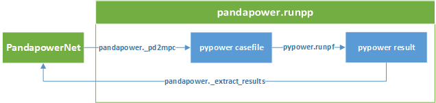

A Short Introduction¶
Datastructure¶
pandapower combines the data analysis library pandas and the power flow solver PYPOWER to create an easy to use network calculation program. pandapower is aimed at automation of power system analysis and optimization in distribution and sub-transmission networks.
pandapower is based on electric elements rather than on generic loadflow attributes. For example, in PYPOWER buses have a power demand and shunt admittance, even though these are in reality the attributes of electric elements (such as loads, pv generators or capacitor banks) which are connected to the buses. In pandapower, we model each electric bus element instead of considering summed values for each bus. The same goes for branches: in reality, buses in a network are connected by electric elements like lines and transformers that can be defined by a length and cable type (lines) or short circuit voltages and rated power (transformers). Since the electric models for lines and transformers are implemented in pandapower, it is possible to model the electric elements with these common nameplate attributes. All parameters which are necessary for the loadflow (like branch per unit impedances, shunt impedances, bus power, bus loadflow type etc.) are then calculated and handled internally by pandapower.
A network in pandapower is represented in a pandapowerNet object, which is a collection of pandas Dataframes. Each dataframe in a pandapowerNet contains the information about one pandapower element, such as line, load transformer etc.
For the following simple 2-bus example network:

the pandapower representation looks like this:

The network can be created with the pandapower create functions, but it also possible to directly manipulate data in the pandapower dataframes.
Loadflow¶
When a loadflow is run, pandapower combines the information of all element tables into one pypower case file and uses pypower to run the loadflow. The results are then processed and written back into pandapower:
{kind=link}
For the 2-bus example network, the result tables look like this:

You can download the python script that creates this 2-bus system here. For more complicated pandapower example, see the pandapower example networks.
Advantages¶
There are various reasons why using pandapower is more comfortable than using pypower directly:
- Electric Models
- pandapower comes with static equivalent circuit models for lines, 2-Winding transformers, 3-Winding transformers, ward-equivalents etc. (see element documentation for a complete list).
- Input parameters are intuitive and commonly used model plate parameters (such as line length and resistance per kilometer) instead of parameters like total branch resistance in per unit
- the pandapower switch model allows modelling of ideal bus-bus switches as well as bus-line / bus-trafo switches
- the loadflow results are processed to include not only the classic loadflow results (such as bus voltages and apparent power branch flows), but also line loading or transformer losses
- pandapower API
- the pandapower API provides create functions for each element to allow automized step-by-step construction of networks
- the standard type library allows simplified creation of lines, 2-Winding transformers and 3-Winding transformers
- networks can be saved and loaded to the hard drive with the pickle library
- pandapower Datastructure
since variables of any datatype can be stored in the pandas dataframes, electric parameters (integer / float) can be stored together with names (strings), status variables (boolean) etc.
variables can be accessed by name instead of by column number of a matrix
since all information is stored in pandas tables, all inherent pandas methods can be used to
- access,
- query,
- statistically evaluate,
- iterate over,
- visualize,
- etc.
any information that is stored in the pandapower dataframes - be it element parameters, loadflow results or a combination of both.
- Topological Searches
- pandapower networks can be translated into networkx multigraphs for fast topological searches
- all native networkx algorithms can be used to perform graph searches on pandapower networks
- pandapower provides some search algorithms specialiced on electric power networks
- Plotting and geographical data
- geographical data for buses and lines can be stored in the pandapower datastructure
- networks with geographic information can be plotted using matplotlib
- if no geographical information is available for the buses, generic coordinates can be created through a python-igraph interface
Unit System and Conventions¶
The unit is always given in the variable name, so that for example ‘loading_percent’ can be read as ‘loading [%]’.
Three Phase System
For the three phase system, the following conventions apply:
- voltage values are given as phase-to-phase voltages
- current values are given as phase currents
- power values are given as three-phase power flows
The power equation in the three phase system is therefore given as \(S = \sqrt3 \cdot V \cdot I\).
Since pandapower was developed for distribution systems, all power values are given in kW or kVar.
per Unit System
Bus voltages are given in the per unit system. The per unit values are relative to the phase-to-phase voltages defined in net.bus.vn_kv for each bus.
Internally, pandapower calculates with a nominal apparent power of \(S_{N} = 1 MVA\) for the per unit system, which however should not be relevant for the user since all power values are given in physical units.
Signing System
For all bus-based power values, the signing is based on the consumer viewpoint:
- positive active power is power consumption, negative active power is power generation
- positive reactive power is inductive consumption, negative reactive power is capacitive consumption
The power flow values for branch elements (lines & transformer) are always defined as the power flow into the branch element.
Frequency
The frequency can be defined when creating an empty network. The frequency is only used to calculate the shunt admittance of lines, since the line reactance is given directly in ohm per kilometer.
The standard frequency in pandapower is 50 Hz, and the pandapower standard types are also chosen for 50 Hz systems. If you use a different frequency, please be aware that the line reactance values might not be realistic.
Unit System and Conventions¶
The unit is always given in the variable name, so that for example ‘loading_percent’ can be read as ‘loading [%]’.
Three Phase System
For the three phase system, the following conventions apply:
- voltage values are given as phase-to-phase voltages
- current values are given as phase currents
- power values are given as three-phase power flows
The power equation in the three phase system is therefore given as \(S = \sqrt3 \cdot V \cdot I\).
Since pandapower was developed for distribution systems, all power values are given in kW or kVar.
per Unit System
Bus voltages are given in the per unit system. The per unit values are relative to the phase-to-phase voltages defined in net.bus.vn_kv for each bus.
Internally, pandapower calculates with a nominal apparent power of \(S_{N} = 1 MVA\) for the per unit system, which however should not be relevant for the user since all power values are given in physical units.
Signing System
For all bus-based power values, the signing is based on the consumer viewpoint:
- positive active power is power consumption, negative active power is power generation
- positive reactive power is inductive consumption, negative reactive power is capacitive consumption
The power flow values for branch elements (lines & transformer) are always defined as the power flow into the branch element.
Frequency
The frequency can be defined when creating an empty network. The frequency is only used to calculate the shunt admittance of lines, since the line reactance is given directly in ohm per kilometer.
The standard frequency in pandapower is 50 Hz, and the pandapower standard types are also chosen for 50 Hz systems. If you use a different frequency, please be aware that the line reactance values might not be realistic.